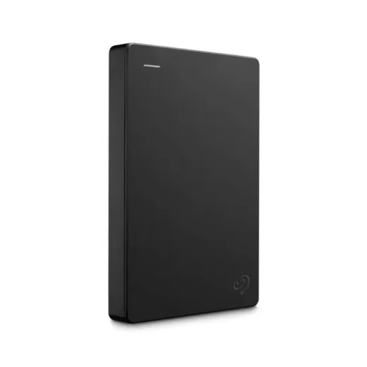
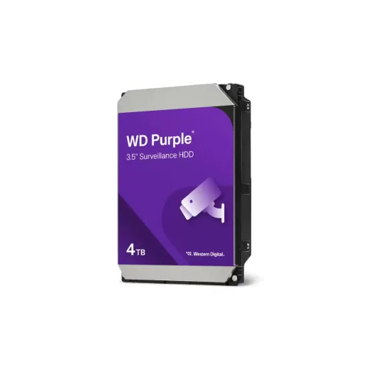
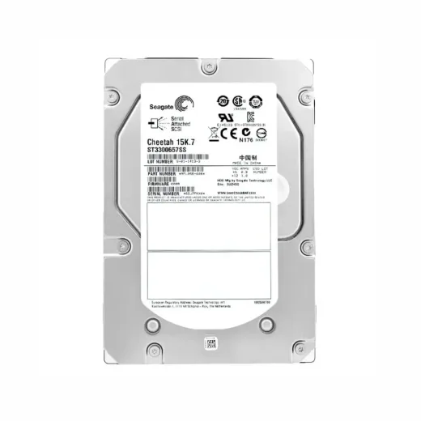
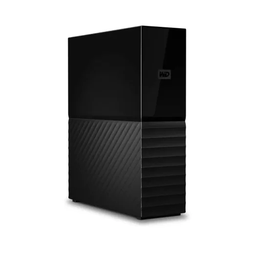
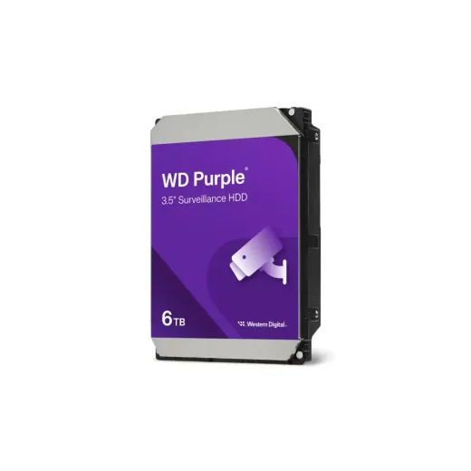

Inicio › Memorias USB, SSD y discos

DURO · Modelo STGX2000400
Disco Duro Externo 2.5 2TB 3.0 Seagate STGX2000400
L 6,395
En Sycom
Precio en cada tienda
| Tienda | Precio | Antes | Disponibilidad | |
|---|---|---|---|---|
| Sycom | L 6,395 | — | Disponible | Ver en tienda › |
Precios referenciales tomados de cada tienda el 14 de noviembre de 2026. El precio válido es el que muestra la tienda al comprar.
Otros memorias usb, ssd y discos DURO

Disco Duro Externo 2.5 4TB Seagate STGX4000400L 7,800En Sycom
Disco Duro 3.5 4TB WD Purple WD44PURZ DVR/NVR N/DL 8,500En Sycom
Disco Duro 3.5 300GB Seagate Cheetah 15000 RPM ST3300655SSL 3,000.01En Sycom
Disco Duro Externo 3.5" 6TB WD My Book · USB 3.2 Gen 1 · WDBBGB0060HBK-NESNL 10,500.01En Sycom
Disco Duro 3.5 6TB WD Purple WD64PURZ N/DL 12,500.01En Sycom